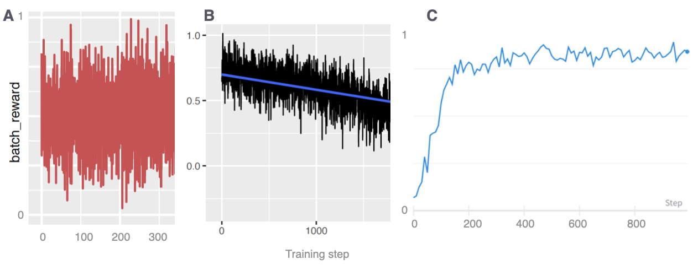

Homework 3: LLM agents & RL fine-tuning#
The third homework zooms in on the following skills: implementing an advanced generation system, diving into task-specific RL fine-tuning hands-on and critically thinking about fine-tuning of LMs.
Logistics#
submission deadline: June 28th th 23:59 German time via Moodle
please upload a SINGLE .IPYNB FILE named Surname_FirstName_HW3.ipynb containing your solutions of the homework.
please solve and submit the homework individually!
if you use Colab, to speed up the execution of the code on Colab, you can use the available GPU (if Colab resources allow). For that, before executing your code, navigate to Runtime > Change runtime type > GPU > Save.
please note that we will need a lot of GPU memory for both Ex. 1 and Ex. 2 – therefore, it might be best to do the tasks in separate runtimes on Colab, otherwise you might run into out of memory issues.
Exercise 1: Building a retrieval-augmented generation system (30 points)#
An increasingly popular approach to language generation is so called retrieval-augmented generation (RAG) wherein a language model is supplied with additional (textual) information retrieved from some storage, in addition to the actual task query. It has been found that this additional context improves model performance, and, e.g., allows to use LLMs with custom information (e.g., proprietary documents etc).
The general set up of a RAG system is as follows:
Some form of a database (DB) with (searchable) relevant background information (e.g., a database, a set of documents, …) is created.
A common database format are vector DBs, or, vectore stores. You can optionally learn more about vector DBs, e.g., here: https://www.pinecone.io/learn/vector-database/. The important conceptual point is that some form of a searchable database with relevant (textual) information is created.
An LLM that will be generating the responses to the queries, given context, is chosen.
An embedding model is chosen.
Task queries (e.g., questions or instructions) are provided to the system.
The query is converted to an embedding (using the model chosen ins tep 3), and the embedding is used to search and retrieve relevant information from the database. The specific retrieval method depnds on the nature of the database.
The relevant information is supplied to the LLM as context.
Given the extended context, the LLM provides output.
This is visualized in the figure below.

The image is sourced from here.
For more details on RAG, you can read the first part of this blog post (until “important concepts within each step”). Here is an optional paper about RAG, in case you want to learn more.
YOUR TASK
Your task in this exercise is to explore RAG by implementing a RAG system for recipe generation. The implemented RAG system should be compared to the performance of the same model in a “vanilla” set-up where the model solves the task directly.
We will use the package
LlamaIndexand the LLMphi-3-mini-4k-instructmodel as the backbone for the implementation. We will use theBAAI/bge-small-en-v1.5model as our embedding model.We will use unstructured data in the form of a recipe dataset
m3hrdadfi/recipe_nlg_lite. This dataset will be indexed and it will be used to supplement information for the LLM, additionally to the query. The train split of the dataset should be used for the index, and a sample from the test dataset will be used for sampling queries with which the system will be tested.For this task, please complete the following steps:
Download the dataset from Huggingface.
Briefly familiarize yourself with the dataset.
Briefly familiarize yourself with this LLamaIndex example RAG system.
Complete the code below (in place of “### YOUR CODE HERE ####”), following the instructions in the comments to build a working RAG system that will generate recipes. Note that you will have to work with the LlamaIndex documentation to complete and understand the code. Some links are already provided.
Answer the questions at the end of the exercise.
# uncomment and run in your environment / on Colab, if you haven't installed these packages yet
# !pip install llama-index-embeddings-huggingface
# !pip install llama-index-llms-huggingface
# !pip install sentence-transformers
# !pip install datasets
# !pip install llama-index
# !pip install "transformers[torch]" "huggingface_hub[inference]"
# from IPython.display import clear_output
# clear_output()
# import packages
from datasets import load_dataset
import os
import pandas as pd
from llama_index.core import VectorStoreIndex, Settings, Document
# from llama_index.embeddings.ollama import OllamaEmbedding
from llama_index.embeddings.huggingface import HuggingFaceEmbedding
from llama_index.llms.huggingface import HuggingFaceLLM
from transformers import AutoTokenizer
import torch
# load dataset from HF
dataset = load_dataset("m3hrdadfi/recipe_nlg_lite")
# convert train split to pandas dataframe
dataset_df = pd.DataFrame(dataset["train"])
# explore
dataset_df.head()
# 1. In order to construct a VectorStorageIndex with the texts from the train dataset split, we need to
# create list of formatted texts.
# We want to construct texts of the form: "Name of recipe \n\n ingredients \n\n steps"
texts = [
#### YOUR CODE HERE #####
]
texts[:2]
# 2. We construct single Documents from the texts
# these documents will be used to construct the vector database
documents = [Document(text=t) for t in texts]
documents
# 3. We prepare some utility functions which are required for the LLM to generate maximally accurate responses
# this includes correctly formatting the query and the context into the prompt and special tokens
# that are expected by the chosen LLM backbone.
# we format the texts into the Phi-3 prompt format
# See https://huggingface.co/microsoft/Phi-3-mini-4k-instruct
# to heck here how the prompt should look like!
def completion_to_prompt(completion):
return ### YOUR CODE HERE ###
In the next cell, the RAG building blocks are put together. Your task is to find out what the different configurations mean and correctly complete the code.
# 4. Save setting that are reused by our RAG system across queries
# you can learn more about the Settings object here: https://docs.llamaindex.ai/en/stable/module_guides/supporting_modules/settings/
# the embedding model is defined
Settings.embed_model = HuggingFaceEmbedding(
### YOUR CODE HERE ###
model_name=,
)
# backbone LLM is passed to the settings
# this is actually the model that is used to generate the response to the query, given retrieved info
# https://docs.llamaindex.ai/en/stable/understanding/using_llms/using_llms/
# and here: https://docs.llamaindex.ai/en/stable/module_guides/models/llms/usage_custom/
Settings.llm = HuggingFaceLLM(
### YOUR CODE HERE ###
model_name= ,
### YOUR CODE HERE ###
tokenizer_name= , #
#### YOUR CODE HERE ###
context_window=1024,
max_new_tokens=128,
generate_kwargs={"temperature": 0.7, "do_sample": True},
completion_to_prompt=completion_to_prompt,
device_map="auto",
model_kwargs={"torch_dtype": torch.float16, "load_in_8bit": True, "trust_remote_code": True},
)
print("Set LLM!")
# https://docs.llamaindex.ai/en/stable/module_guides/indexing/vector_store_index/
# we create a vector store from our documents
# here, we let the VectorStore convert the documents to nodes automatically
index = VectorStoreIndex.from_documents(
#### YOUR CODE HERE ###
)
print("Created index!")
Below is a single example for running a query with the RAG system, and inspecting various interesting aspects of the response generated by the model. Your task is, in the following, to set up a testing loop, which will test different queries with the RAG system and vanilla generation with the same LLM. Use the example as help. Provide comments explaning the single paramters for the following example, in place of “### YOUR COMMENT HERE ###”.
# https://docs.llamaindex.ai/en/stable/module_guides/deploying/query_engine/
# we define the query engine: generic interface that allows to ask questions over data
query_engine = index.as_query_engine(
### YOUR COMMENT HERE ###
response_mode="compact",
### YOUR COMMENT HERE ###
similarity_top_k=3,
verbose=True,
)
# https://docs.llamaindex.ai/en/stable/module_guides/querying/response_synthesizers/
response = query_engine.query("How do I make pork chop noodle soup?")
print(response)
for i, n in enumerate(response.source_nodes):
print(f"----- Node {i} -----")
print(n.node.get_content())
print("score")
print(n.score)
# testing loop
rag_responses = []
vanilla_responses = []
retrieved_node_texts = []
retrieved_node_scores = []
# retrieve 20 random dish names from test dataset to test the system on
test_df = pd.DataFrame(dataset["test"]).sample(20)
test_queries = [
f'How do I make {r["name"]}?' for
_, r in test_df.iterrows()
]
print(test_queries[:5])
for query in test_queries[:5]:
### YOUR CODE HERE ###
# run the query against the RAG system
response_rag =
rag_responses.append(str(response_rag))
# record the texts of the nodes that were retrieved for this query
retrieved_node_texts.append(
[### YOUR CODE HERE ### ]
)
# record the scores of the texts of the retrieved nodes
retrieved_node_scores.append(
[### YOUR CODE HERE ###]
)
### YOUR CODE HERE ###
# implement the "vanilla" (i.e., straightforward) generation of the response to the same query with the backbone LLM
# Hint: check the intro-to-hf sheet for examples how to generate text with an LM
response_vanilla =
vanilla_responses.append(response_vanilla)
retrieved_node_scores
test_queries[:5]
Questions:
Inspect the results of the testing. (a) How often do you prefer the RAG response over the vanilla response? (b) Do you observe differences between the RAG and vanilla responses? If yes, what are these? (c) Inpsect the retrieved documents and their scores. Do they make sense for the queries? Do the scores match your intuition about their relevance for the query?
What could be advantages and disadvantages of using RAG? Name 1 each.
What is the difference between documents and nodes in the RAG system?
What does the embedding model do? What is the measure that underlies retrieval of relevant documents?
What are different response modes of the query engine? Is the chosen mode a good choice for our application? Why (not)?
Exercise 2: RLHF for summarization (15 points)#
In this exercise, we want to fine-tune GPT-2 to generate human-like news summaries, following a procedure that is very similar to the example of the movie review generation from sheet 4.1. The exercise is based on the paper by Ziegler et al. (2020).
To this end, we will use the following components:
in order to initialize the policy, we use GPT-2 that was already fine-tuned for summarization, i.e., our SFT model is this
as our reward model, we will use a task-specific reward signal, namely, the ROUGE score that evaluates a summary generated by a model against a human “gold standard” summary.
a dataset of CNN news texts and human-written summaries (for computing the rewards) for the fine-tuning which can be found here. Please note that we will use the validation split because we only want to run short fine-tuning.
NOTE: for building the datset and downloading the pretrained model, ~4GB of space will be used.
YOUR TASK:
Your job for this task is to set up the PPO-based training with the package
trl, i.e., the set up step 3 of this figure.
Please complete the code or insert comments what a particular line of code does below where the comments says “#### YOUR CODE / COMMENT HERE ####”. For this and for answering the questions, you might need to dig a bit deeper into the working of proximal policy optimization (PPO), the algorithm that we are using for training. You can find relevant information, e.g., here.
To test your implementation, you can run the training for some steps, but you are NOT required to train the full model since it will take too long.
Answer the questions below.
{kind=link}
# !pip install trl accelerate==0.27.2 evaluate rouge_score datasets
# import libraries
import torch
from tqdm import tqdm
import pandas as pd
tqdm.pandas()
from transformers import AutoTokenizer
from datasets import load_dataset
from trl import (
PPOTrainer,
PPOConfig,
AutoModelForCausalLMWithValueHead
)
import evaluate
config = PPOConfig(
model_name="gavin124/gpt2-finetuned-cnn-summarization-v2",
learning_rate=1.41e-5,
steps=250,
#### YOUR COMMENT HERE (what is batch_size) ####
batch_size=4,
mini_batch_size=4,
#### YOUR COMMENT HERE (what is ppo_epochs) ####
ppo_epochs=4,
)
We load the CNN dataset into a DataFrame and and truncate the texts to 500 tokens, because we don’t want the training to be too memory heavy and we want to have “open” some tokens for the generation (GPT-2’s context window size is 1024). Then we tokenize each text and pad it.
def build_dataset(
config,
dataset_name="abisee/cnn_dailymail"
):
"""
Build dataset for training. This builds the dataset from `load_dataset`.
Args:
dataset_name (`str`):
The name of the dataset to be loaded.
Returns:
dataloader (`torch.utils.data.DataLoader`):
The dataloader for the dataset.
"""
tokenizer = AutoTokenizer.from_pretrained(#### YOUR CODE HERE ####)
tokenizer.pad_token = tokenizer.eos_token
tokenizer.padding_side = 'left'
# load the datasets
ds = load_dataset(dataset_name, '1.0.0', split="validation")
def tokenize(sample):
sample["input_ids"] = tokenizer.encode(
#### YOUR CODE HERE (hint: inspect the dataset to see how to access the input text)####,
return_tensors="pt",
max_length=512,
truncation=True,
padding="max_length"
)
# get the truncated natural text, too
sample["query"] = tokenizer.decode(sample["input_ids"][0])
return sample
ds = ds.map(tokenize, batched=False)
ds.set_format(type="torch")
return ds
# build the dataset
dataset = build_dataset(config)
def collator(data):
return dict((key, [d[key] for d in data]) for key in data[0])
# inspect a sample of the dataset
print(dataset[0])
We load the finetuned GPT2 model with a value head and the tokenizer. We load the model twice; the first model is the one that will be optimized while the second model serves as a reference to calculate the KL-divergence from the starting point.
model = AutoModelForCausalLMWithValueHead.from_pretrained(#### YOUR CODE / COMMENT HERE ####)
ref_model = AutoModelForCausalLMWithValueHead.from_pretrained(#### YOUR CODE / COMMENT HERE ####)
tokenizer = AutoTokenizer.from_pretrained(#### YOUR CODE / COMMENT HERE ####)
tokenizer.pad_token = tokenizer.eos_token
AutoModelForCausalLMWithValueHead is a model class provided by trl that is used for training models with RL with a baseline. The baseline is used as shown, e.g., on slide 76-78 of lecture 05. Specifically, the baseline is simultaneously learned during training, and learns to predict the so-called action value, namely the expected reward for generating a particular completion, given the query. This baseline is implemented as an additional (scalar output) head next to the next-token prediction head of the policy, and is called the value head. Based on the query and completion representation, it learns to predict a scalar reward which is compared to the ground truth reward from the reward model.
The PPOTrainer takes care of device placement and optimization later on:
ppo_trainer = PPOTrainer(config, model, ref_model, tokenizer, dataset=dataset, data_collator=collator)
device = ppo_trainer.accelerator.device
if ppo_trainer.accelerator.num_processes == 1:
device = 0 if torch.cuda.is_available() else "cpu" # to avoid a `pipeline` bug
print("Device: ", device)
rouge = evaluate.load("rouge")
def reward_fn(
output: list[str],
original_summary: list[str]
):
"""
#### YOUR COMMENT HERE ####
"""
scores = []
for o, s in list(zip(output, original_summary)):
score = rouge.compute(predictions=[o.strip()], references=[s])["rouge1"]
scores.append(torch.tensor(score))
return scores
output_max_length = 128
#### YOUR COMMENT HERE: explain what kind of decoding scheme these parameters initialize ####
generation_kwargs = {
"min_length": -1,
"top_k": 0.0,
"top_p": 1.0,
"do_sample": True,
"pad_token_id": tokenizer.eos_token_id,
"max_new_tokens": output_max_length
}
for epoch, batch in tqdm(enumerate(ppo_trainer.dataloader)):
query_tensors = batch["input_ids"]
query_tensors = [q.squeeze() for q in query_tensors]
#### Get response from gpt2
response_tensors = []
for query in query_tensors:
response = ppo_trainer.generate(query, **generation_kwargs)
response_tensors.append(response.squeeze()[-output_max_length:])
batch["response"] = [tokenizer.decode(r.squeeze()) for r in response_tensors]
#### Compute score with the reward_fn above
rewards = #### YOUR CODE HERE ####
#### Run PPO step
stats = ppo_trainer.step(query_tensors, response_tensors, rewards)
ppo_trainer.log_stats(stats, batch, rewards)
QUESTIONS:
What are the three main steps in the training loop? Please name them (in descriptive words, you don’t need to cite the code).
Suppose the plots below show training metrics for different runs of the summarization model training. Interpret what each of them tells us about training success; i.e., did the training go well on this run? Do we expect to get good summaries? Why? Be concise!
We have truncated the query articles to maximally 512 tokens. Given that we are using ROUGE with respect to ground truth summaries as a reward, why might this be problematic?
[Bonus 2pts] The overall loss that is optimized during training with PPO consists of two components: the policy loss that is computed based on the completion log probability and the reward, and the value function loss which is computed based on the the predicted and received reward for a completion. These two loss components are weighed in the total loss function with the value function coefficient (
vf_coef). Intuitively, how does it affect training if the coefficient is set to a high value?

Exercise 3: Aspects of fine-tuning (5 points)#
Please answer the following questions. Be concise!
When assistants are trained with RLHF, they are often optimized to be helpful and harmless. However, it has been observed that the goals of being harmless and helpful at the same time may be at odds. In particular, the problem of evasive behavior has been observed for models optimized for these goals. For example, this paper mentions this problem. In your own words, please briefly describe what evasive behavior of LLMs is, give an example, and why it is a problem.
What special tokens are commonly used for chat model fine-tuning, and what is their purpose?
Please name two parameter-efficient fine-tuning techniques and briefly explain one advantage of using each technique over full-scale fine-tuning.